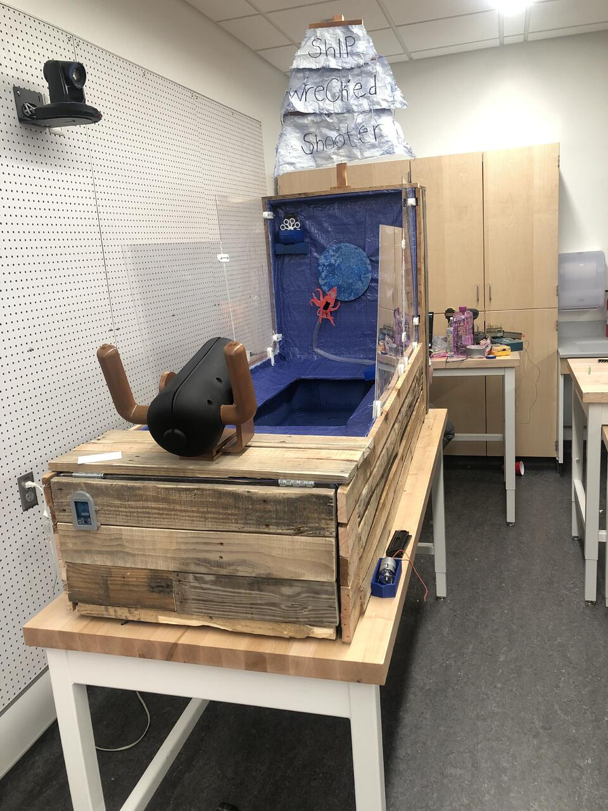

Carnival Game (STEM Outreach)
Associated with Utah Tech University | Played by over 400 attendees

Project Overview
Developed an interactive water cannon game integrating Hall effect sensors, Arduino microcontrollers, and IoT systems to track and display real-time scores. This project was showcased at a STEM outreach event, engaging over 400 attendees.
Engineering Focus
- Integrated multiple Hall effect sensors with Arduino for event detection
- Implemented IoT-based real-time score tracking and data display
- Designed and 3D printed custom sensor mounts and game housings
- Calibrated sensors for consistent and responsive feedback
Skills Applied
- Arduino programming
- Sensor calibration and testing
- IoT system integration
- SolidWorks and 3D printing
← Back to Projects